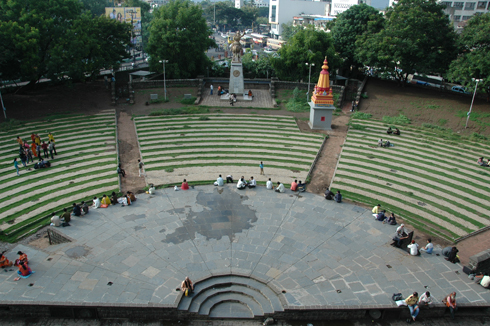
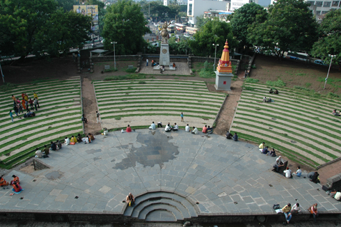

Shaniwar Wada Fort

 

Description :
Shanivarwada fort was the seat of the Maratha empire between 1730 to 1818. Among the most stunning forts in Pune, this one holds a special and an important place in Indian history. Built by the Peshwas of Chhatrapati, this palace fort has nearly been destroyed by military attacks and was majorly by an unexplained fire in 1828. It is also believed that the fort palace is haunted by the ghost of Peshwa Narayanro. It’s not only among the most popular forts in Maharashtra but also among the most significant monuments in India.
Location :
Similar Forts